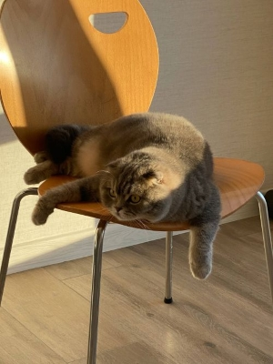

Я фанат команди Динамо навіть коли вони програють — а це буває ДУЖЕ часто.
Про футбольні новини можна почитати тут
У вільний час можу погратися з дитиною у Fortnite на приставці — ну як граюся... програю скіловому хлопцю.
Вдома мене завжди чекає пухнасте щастя —кіт на ім’я Буба  який вважає себе головним у квартирі і ніколи не дивиться на годинник о другій годині ночі.
Перед сном план такий: "15 хвилин рілсів та спати."
Реальність - через дві години: